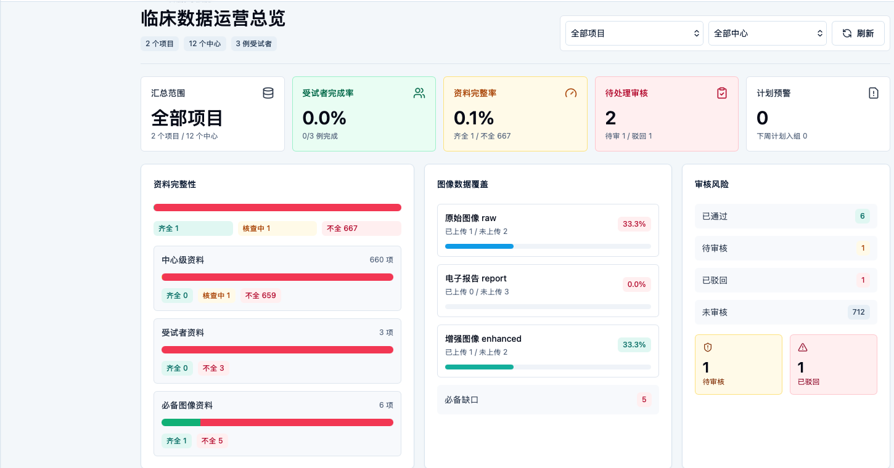
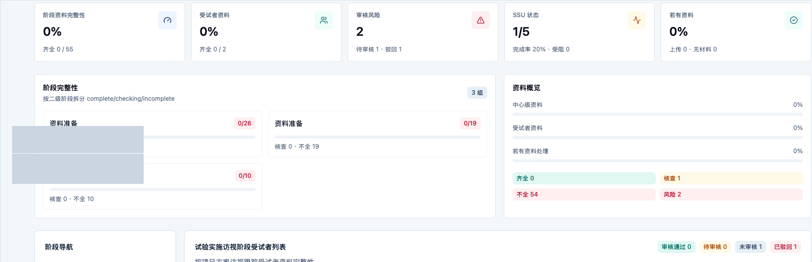
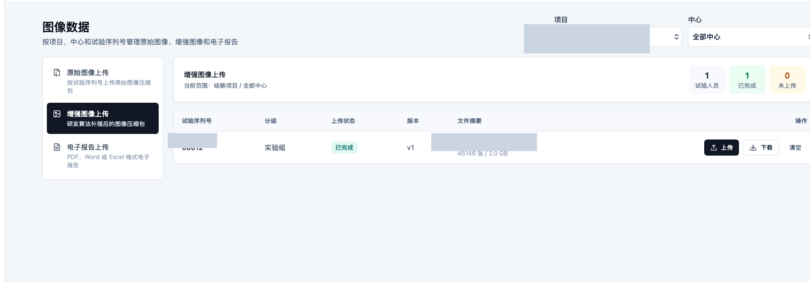
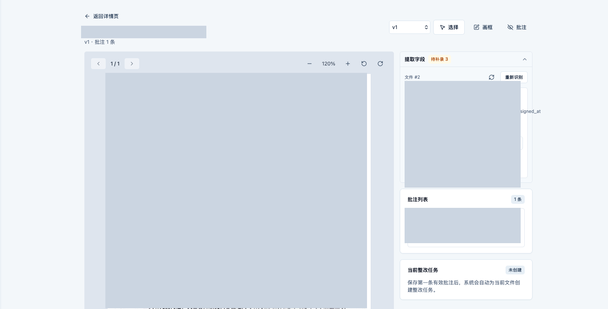
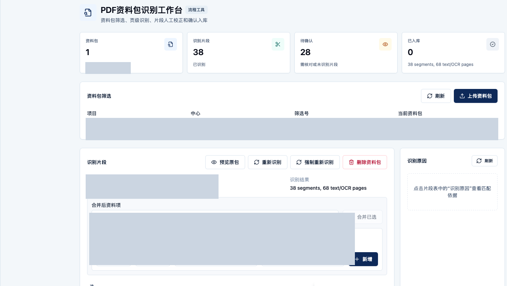
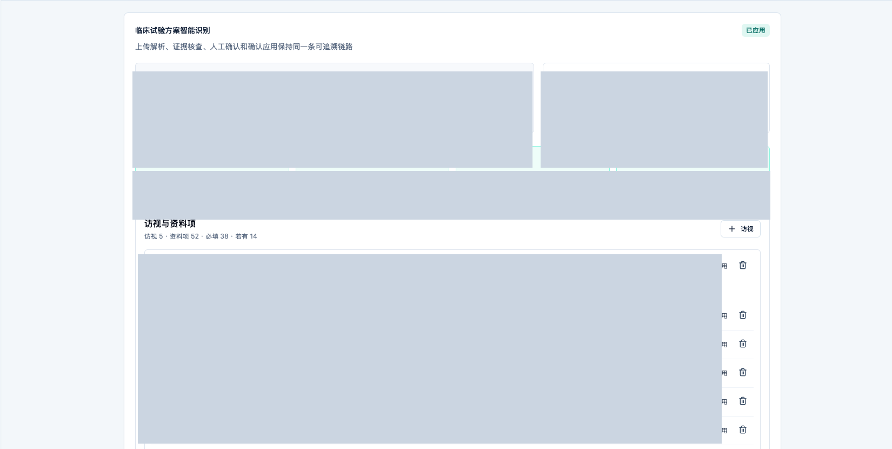

有来源
来自真实临床资料管理、图像资料上传、审核闭环和研发处理流程。
Data IP Briefing
面向市场监督管理局知识产权科，展示巡常在临床资料、图像报告与智能化处理过程中形成的数据产品基础，并请教后续数据知识产权申请边界与材料要求。
Overview
巡常已经形成数据来源、处理规则、质量标签、审核链路和脱敏输出方向。后续数据知识产权申请的候选对象，将来自脱敏、结构化、标签化、质控后的数据集或数据产品。
来自真实临床资料管理、图像资料上传、审核闭环和研发处理流程。
系统已经围绕完整性、覆盖率、审核状态、风险标签和智能拆解形成处理规则。
对外沟通只展示脱敏样例、结构说明和能力截图，不展示原始患者资料。
Chapter 01
先证明巡常不是概念项目，而是已经围绕临床资料、图像资料和过程状态沉淀了多类业务数据。
Asset Foundation
巡常当前服务临床资料收集、审核闭环、图像数据管理和研发处理。数据价值来自连续过程、结构化状态和智能加工结果的组合。

项目、中心、阶段、资料状态、审核状态、整改闭环和时间进度，为后续形成过程型数据集提供基础。
原始图像、增强图像、电子报告按试验序列号管理，可形成覆盖率、质量状态和研发处理标签。
PDF 审阅、资料包拆解、方案解析等能力可沉淀为结构化字段、片段关系、证据链和规则版本。
Chapter 02
把可展示、可说明、不可外流的边界讲清楚，是本次对外沟通的合规基础。
Compliance Boundary
当前系统以授权临床与研发使用为基础，原始资料可能包含个人健康信息、项目文件、报告内容和试验过程细节。本次对外展示和后续申请材料必须把原始资料与数据产品分开。
PDF 正文、原始图像、患者身份、文件名、方案编号、字段抽取值、操作日志和未经处理的试验序列号。
系统模块、流程节点、指标类别、状态分布、脱敏样例、字段结构和加工规则说明。
经脱敏、清洗、标准化、标签化、质控和存证后的数据集、JSON 快照或 API 型数据服务。
Chapter 03
把巡常从“系统功能”翻译成“可登记、可评估、可服务”的数据产品语言。
Product Shape
这些产品不直接暴露原始临床资料，而是围绕结构化状态、加工标签、统计指标和服务接口提供价值。
按项目、中心、阶段和资料项形成完整性、审核状态、缺失原因和整改状态。
按试验序列维度沉淀原始图像、增强图像、电子报告的覆盖率与处理状态。
沉淀资料包拆解、PDF 审阅、方案解析过程中的片段、字段、证据和质量标签。
面向依法授权的研发或合作场景，输出脱敏 JSON、统计指标、质量评估和模型训练前的数据准备服务。


Chapter 04
用样例解释“数据产品长什么样”，但明确不代表当前已经产出完整真实 JSON。
Schema Demo
以下为模拟结构，仅用于说明字段组织方式，不含真实患者数据，不代表当前系统已完成完整 JSON 产品化输出。
{
"dataset_id": "xunchang_clinical_data_asset_v1_demo",
"snapshot_version": "2026-06-demo",
"de_identification": {
"method": "pseudonymization + generalization",
"direct_identifiers": "removed",
"source_files": "not_exported"
},
"record": {
"project_group": "clinical_project_demo",
"center_group": "center_demo_a",
"subject": {
"anonymous_id": "SUBJ_8F3A21",
"age_band": "60-69",
"gender": "female"
},
"document_status": {
"startup_complete_rate": 0.86,
"trial_visit_status": "in_progress",
"risk_label": "missing_required_report"
},
"image_data": {
"raw_uploaded": true,
"enhanced_uploaded": true,
"report_uploaded": false,
"quality_flag": "pending_report"
},
"derived_labels": {
"data_completeness": "partial",
"review_priority": "medium",
"research_ready": false
}
}
}个人身份、原始文件、试验序列号等不直接输出，只保留匿名 ID、分组和统计粒度。
完整性、风险、研发可用性等来自系统处理规则，不是简单复制原始数据。
每次快照记录版本、加工规则和生成时间，为后续登记、审计、评估提供依据。
Chapter 05
PDF 审阅、资料包拆解和方案解析可以作为“加工规则与数据增值”的说明证据。
Processing Evidence
这些页面只用于展示处理能力，不展示原始 PDF、字段值或方案内容；截图区域已做不可逆打码。



Registration Path
面向数据知识产权沟通，建议把材料准备成可审查的数据产品说明包。
明确是数据集、JSON 快照还是 API 型数据服务，避免把原始临床资料作为对象。
说明字段结构、来源系统、更新频次、口径、质量规则和可用范围。
定义删除、泛化、匿名化、分组统计和禁止导出的字段范围。
记录快照版本、生成时间、规则版本、哈希摘要和访问权限。
巡常这类临床研发数据经脱敏加工后，是否适合作为数据知识产权登记候选对象；登记对象应落在数据集、数据产品、数据处理规则，还是组合材料；截图、Schema、数据字典、加工规则、脱敏规则和哈希存证是否可作为申请支撑材料。